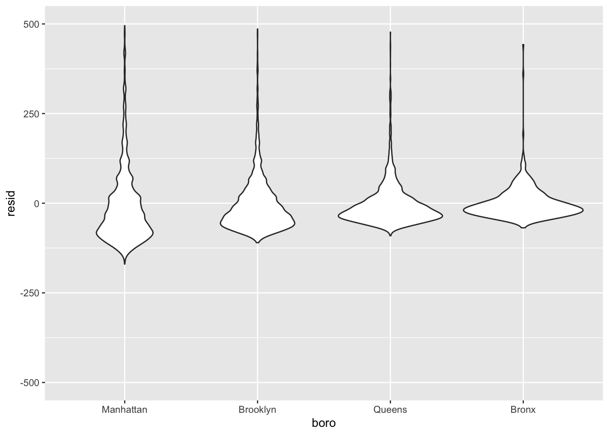
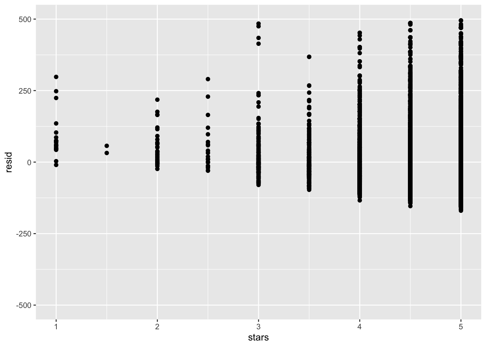
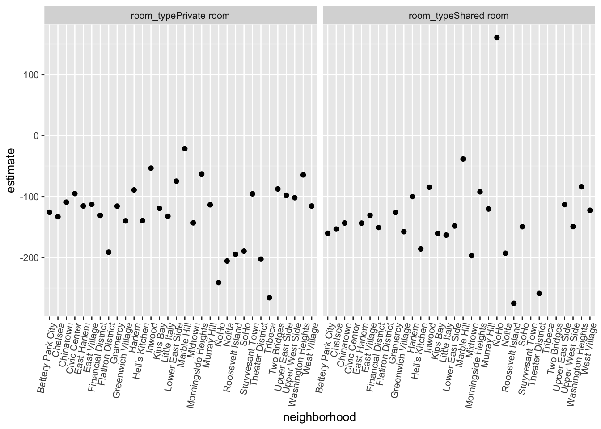

data("nyc_airbnb")
nyc_airbnb =
nyc_airbnb %>%
mutate(stars = review_scores_location / 2) %>%
rename(
boro = neighbourhood_group,
neighborhood = neighbourhood) %>%
filter(boro != "Staten Island") %>%
dplyr::select(price, stars, boro, neighborhood, room_type)Fit the first linear model:
fit = lm(price ~ stars + boro, data = nyc_airbnb)
summary(fit)##
## Call:
## lm(formula = price ~ stars + boro, data = nyc_airbnb)
##
## Residuals:
## Min 1Q Median 3Q Max
## -169.8 -64.0 -29.0 20.2 9870.0
##
## Coefficients:
## Estimate Std. Error t value Pr(>|t|)
## (Intercept) -70.414 14.021 -5.022 5.14e-07 ***
## stars 31.990 2.527 12.657 < 2e-16 ***
## boroBrooklyn 40.500 8.559 4.732 2.23e-06 ***
## boroManhattan 90.254 8.567 10.534 < 2e-16 ***
## boroQueens 13.206 9.065 1.457 0.145
## ---
## Signif. codes: 0 '***' 0.001 '**' 0.01 '*' 0.05 '.' 0.1 ' ' 1
##
## Residual standard error: 181.5 on 30525 degrees of freedom
## (9962 observations deleted due to missingness)
## Multiple R-squared: 0.03423, Adjusted R-squared: 0.03411
## F-statistic: 270.5 on 4 and 30525 DF, p-value: < 2.2e-16coef(fit)## (Intercept) stars boroBrooklyn boroManhattan boroQueens
## -70.41446 31.98989 40.50030 90.25393 13.20617Tidy the results:
fit %>%
broom::tidy() %>%
mutate(
term = str_replace(term, "boro", "Boro:")
) %>%
knitr::kable()| term | estimate | std.error | statistic | p.value |
|---|---|---|---|---|
| (Intercept) | -70.41446 | 14.020697 | -5.022180 | 0.0000005 |
| stars | 31.98989 | 2.527500 | 12.656733 | 0.0000000 |
| Boro:Brooklyn | 40.50030 | 8.558723 | 4.732049 | 0.0000022 |
| Boro:Manhattan | 90.25393 | 8.567490 | 10.534465 | 0.0000000 |
| Boro:Queens | 13.20617 | 9.064879 | 1.456850 | 0.1451682 |
Take a look at factors…
nyc_airbnb =
nyc_airbnb %>%
mutate(
boro = fct_infreq(boro), # reorder factor levels based on their frequencies
room_type = fct_infreq(room_type))
fit = lm(price ~ stars + boro, data = nyc_airbnb)
fit %>% broom::glance()## # A tibble: 1 x 11
## r.squared adj.r.squared sigma statistic p.value df logLik AIC
## <dbl> <dbl> <dbl> <dbl> <dbl> <int> <dbl> <dbl>
## 1 0.0342 0.0341 182. 271. 6.73e-229 5 -2.02e5 4.04e5
## # … with 3 more variables: BIC <dbl>, deviance <dbl>, df.residual <int>modelr::add_residuals(nyc_airbnb, fit) %>%
ggplot(aes(x = boro, y = resid)) +
geom_violin() +
ylim(-500, 500)## Warning: Removed 10202 rows containing non-finite values (stat_ydensity).
nyc_airbnb %>%
modelr::add_residuals(fit) %>%
ggplot(aes(x = stars, y = resid)) +
geom_point() +
ylim(-500, 500)## Warning: Removed 10202 rows containing missing values (geom_point).
modelr::add_predictions(nyc_airbnb, fit)## # A tibble: 40,492 x 6
## price stars boro neighborhood room_type pred
## <dbl> <dbl> <fct> <chr> <fct> <dbl>
## 1 99 5 Bronx City Island Private room 89.5
## 2 200 NA Bronx City Island Private room NA
## 3 300 NA Bronx City Island Entire home/apt NA
## # … with 4.049e+04 more rowsnyc_airbnb %>%
lm(price ~ stars * boro + room_type * boro, data = .) %>%
broom::tidy() %>%
knitr::kable(digits = 3)| term | estimate | std.error | statistic | p.value |
|---|---|---|---|---|
| (Intercept) | 95.694 | 19.184 | 4.988 | 0.000 |
| stars | 27.110 | 3.965 | 6.838 | 0.000 |
| boroBrooklyn | -26.066 | 25.080 | -1.039 | 0.299 |
| boroQueens | -4.118 | 40.674 | -0.101 | 0.919 |
| boroBronx | -5.627 | 77.808 | -0.072 | 0.942 |
| room_typePrivate room | -124.188 | 2.996 | -41.457 | 0.000 |
| room_typeShared room | -153.635 | 8.692 | -17.676 | 0.000 |
| stars:boroBrooklyn | -6.139 | 5.237 | -1.172 | 0.241 |
| stars:boroQueens | -17.455 | 8.539 | -2.044 | 0.041 |
| stars:boroBronx | -22.664 | 17.099 | -1.325 | 0.185 |
| boroBrooklyn:room_typePrivate room | 31.965 | 4.328 | 7.386 | 0.000 |
| boroQueens:room_typePrivate room | 54.933 | 7.459 | 7.365 | 0.000 |
| boroBronx:room_typePrivate room | 71.273 | 18.002 | 3.959 | 0.000 |
| boroBrooklyn:room_typeShared room | 47.797 | 13.895 | 3.440 | 0.001 |
| boroQueens:room_typeShared room | 58.662 | 17.897 | 3.278 | 0.001 |
| boroBronx:room_typeShared room | 83.089 | 42.451 | 1.957 | 0.050 |
nest_lm_res =
nyc_airbnb %>%
nest(data = -boro) %>%
mutate(models = map(data, ~lm(price ~ stars + room_type, data = .x)),
models = map(models, broom::tidy)) %>%
dplyr::select(-data) %>%
unnest(models)manhattan_airbnb =
nyc_airbnb %>%
filter(boro == "Manhattan")
manhattan_nest_lm_res =
manhattan_airbnb %>%
nest(data = -neighborhood) %>%
mutate(models = map(data, ~lm(price ~ stars + room_type, data = .x)),
models = map(models, broom::tidy)) %>%
dplyr::select(-data) %>%
unnest(models)
manhattan_nest_lm_res %>%
filter(str_detect(term, "room_type")) %>%
ggplot(aes(x = neighborhood, y = estimate)) +
geom_point() +
facet_wrap(~term) +
theme(axis.text.x = element_text(angle = 80, hjust = 1))